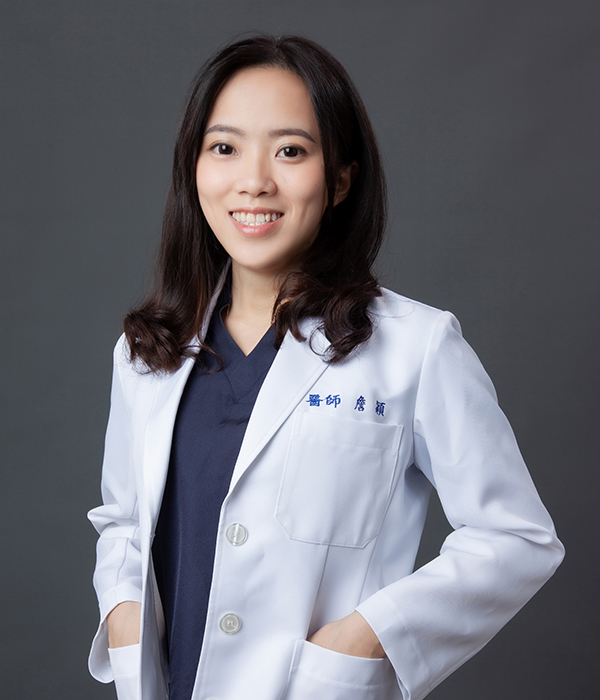

我是詹穎醫師，畢業於台北醫學大學牙醫學系，曾任職於國立成功大學附設醫院，累積了豐富的臨床經驗。
我深信每位患者都值得被用心對待。在看診過程中，我會耐心聆聽患者的需求與擔憂，透過詳細的解說讓患者了解自己的口腔狀況，並共同擬定最適合的治療計畫。
取得隱適美隱形矯正認證後，我更致力於提供兼顧美觀與健康的矯正治療，讓患者在不影響日常生活的情況下，逐步擁有整齊自信的笑容。
牙醫學系 學士
牙科部醫師
主治醫師
隱形矯正認證醫師
執業牙醫師
會員醫師
提供全方位的牙科照護，從基本保健到進階美學治療
採用透明隱形牙套，在不影響外觀的情況下逐步調整牙齒排列，適合在意美觀的成人與青少年。
提供診間冷光美白及居家美白療程，安全有效地還原牙齒亮白色澤，重拾自信笑容。
以極薄陶瓷貼片覆蓋前牙表面，改善牙齒顏色、形狀與排列，打造自然完美的微笑曲線。
採用高品質複合樹脂及陶瓷嵌體，精準修復蛀蝕的牙齒結構，恢復牙齒外觀與咬合功能。
針對深層蛀牙或牙髓感染，以精密器械清除發炎組織並密封根管，有效保留自然牙齒。
透過深層洗牙、牙根整平等方式，清除牙結石與牙菌斑，控制牙周發炎，維護牙齦健康。
以鈦金屬植體取代缺失牙根，搭配全瓷冠恢復自然外觀與咀嚼功能，穩固耐用如同真牙。
提供全瓷冠、活動假牙等多元贋復方案，恢復牙齒的功能與美觀。
以溫柔耐心的方式為小朋友提供口腔檢查、塗氟、窩溝封填等預防保健，建立良好看牙經驗。
每位患者的需求和感受都是獨特的。我會花時間了解您的期望，量身打造最適合的治療方案，讓您在每個決定中都感到安心。
理解許多患者對看牙的緊張與恐懼，我會以最輕柔的手法進行治療，並在過程中隨時關心您的感受，打造舒適的就診體驗。
除了解決現有問題，我更重視口腔健康的長期維護。透過衛教指導與定期追蹤，幫助您從根本預防牙齒疾病的發生。
牙醫技術日新月異，我持續參與國內外進修課程，將最新的治療技術與觀念帶給每一位患者，提供更精準有效的醫療服務。
歡迎預約諮詢，讓我為您的口腔健康把關
※ 實際看診時段請電洽診所或透過 LINE 預約